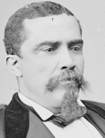

|

|

|
|
|
Born in Charleston, possibly the child of immigrants from Haiti, Alonzo Jacob Ransier worked
before the Civil War as a clerk with a leading shipping house. He attended the
South Carolina black convention of 1865 and was one of the delegation chosen to
present its memorial to Congress. In 1866, he was associate editor of the
South Carolina Leader. Ransier represented Charleston at the
constitutional convention of 1868 and in the state House of Representatives,
1868-70, where he chaired the committee on privileges and elections. He also
served as a presidential elector in 1868, and was also a registrar; Charleston
County auditor, 1869-70; and a trustee of the state orphan asylum. In 1868,
Ransier was chosen to succeed Benjamin F. Randolph as chairman of the state
Republican party after Randolph's assassination. In 1869, he obtained a charter
for the Amateur Literary and Fraternal Association of Charleston. The following
year, Ransier was among those demanding more offices for blacks and was elected
lieutenant governor, serving to 1872. In 1872, Ransier was elected to the U.S.
House of Representatives and served for one term, 1873-75.
Ransier attended the state labor convention of 1869. According to the census
of 1870, he owned $550 in real estate, but in 1872 he paid taxes on real estate
valued at $7,857. He was secretary of the black-owned Enterprise Railroad. In an
1870 speech in predominantly white Spartanburg County, Ransier described the
Republicans as "a progressive poor man's party," which sought an alliance
between blacks and poor whites. Speaking of legislation to prevent the seizure
of homes and a specified amount of property for debt, he noted: "There was not
one perhaps in several thousand colored men who had a homestead while many a
white man ... had a homestead which he owned, and we saved him and his family
from being driven out of doors ... Colored men and legislation by colored men
did it." Ransier was also a critic of railroad subsidies and political
corruption.
After leaving Congress, Ransier served as a U.S. internal revenue collector,
1875-77. Thereafter, his fortunes waned. In 1879, he was working as a night
watchman at the Charleston custom house. The census of 1880 found him living in
a crowded boardinghouse in the city. When he died, Ransier was employed as a day
laborer for the city of Charleston.
Source: Eric Foner, Freedom's Lawmakers: A Directory of Black
Officeholders during Reconstruction (New York: Oxford University Press,
1993), 176.
|